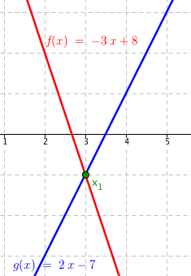

Lineární nerovnice
Lineární nerovnice se řeší podobnými úpravami jako když počítáte běžnou lineární rovnici. Lineární nerovnice má zpravidla takovýto tvar: ax + b>0 (případně menší než, větší nebo rovno a menší nebo rovno). Nyní už stačí pouze upravit nerovnici do následující tvaru a výsledek je na světě: x>−b/a. Samozřejmě předpokládáme, že a≠0.
Obyčejná lineární nerovnice #
Lineární nerovnici lze řešit ekvivalentními úpravami nerovnic.
Jednoduchý příklad může vypadat takto:
\[ 3x + 9 > 3 \]Jako první přesuneme všechny výrazy bez neznámé na pravou stranu. Takže v nerovnici přičteme číslo −9, čímž dostaneme nerovnici:
\[\begin{eqnarray} 3x + 9 - 9 &>& 3 - 9\\ 3x &>& -6 \end{eqnarray}\]Následně celou nerovnici vydělíme třemi:
\[\begin{eqnarray} 3x/3 &>& -6/3\\ x &>& -2 \end{eqnarray}\]To je výsledek celé nerovnice. Nerovnice má řešení pro všechna x > −2.
Nerovnici bychom mohli vyřešit i graficky. Pokud máme nerovnici 3x + 9 > 3, nakreslíme si grafy dvou funkcí – levé a pravé strany nerovnice. Získáme funkce f(x) = 3x + 9 a g(x) = 3. Jejich grafy vypadají takto:
 Grafy funkcí f(x) = 3x + 9 a g(x) = 3
Grafy funkcí f(x) = 3x + 9 a g(x) = 3Vidíme, že tyto grafy se protínají v jednom bodě x1, který má x-ovou souřadnici právě −2. Také vidíme, že pro všechna x > x1, tedy pro všechna x z intervalu (−2, ∞) je červená funkce 3x + 9 „nad“ modrou funkcí 3 (zde je „nad“ ve smyslu „má větší y-ovou souřadnici"). Což souhlasí s výsledkem, ke kterému jsme se před chvílí dopočítali.
Někdy se hodí, pokud tam máte mockrát minus, vynásobit celou nerovnici minus jedničkou. V tomto případě musíte kromě samotných hodnot nerovnice obrátit také znaménko – z větší než udělat menší než a naopak:
\[\begin{eqnarray} -x&<&-10\quad /\cdot(-1)\\ x&>&10 \end{eqnarray}\]Toto samozřejmě platí kdykoliv násobíte celou nerovnici jakýmkoliv záporným číslem. Takže ještě jeden rychlý příklad:
\[\begin{eqnarray} -3x+8&<&2x-7\\ -5x&<&-15\qquad /\cdot \left(-\frac15\right)\\ x&>&3 \end{eqnarray}\]V prvním kroku normálně přičteme k nerovnici −2x, takže přesuneme všechny výrazy s proměnnou na levou stranu. Zároveň odečteme osmičku, čímž přesuneme konstanty na pravou stranu. Pak už jen vynásobíme celou nerovnici \(-\frac15\).
Pro ilustraci si prohlédněte grafické řešení nerovnice, kde zakreslíme dvě funkce f(x) = −3x + 8 a g(x) = 2x − 7.
Grafy funkcí f(x) = −3x + 8 a g(x) = 2x − 7Vidíme, že červený graf funkce −3x + 8 se nachází pod modrým grafem funkce 2x − 7 vždy, když x > 3.
Proměnná ve jmenovateli #
Lineární nerovnice, která obsahuje zlomky s proměnnou ve jmenovateli, se řeší trochu složitějším způsobem. Příkladem může být nerovnice:
Nerovnici nemůžeme vynásobit neznámou ve jmenovateli, protože neznáme její znaménko. Pokud by totiž hodnota proměnná byla záporná, pak bychom museli otočit znaménko nerovnosti. Proto si nemůžeme dovolit jen tak vynásobit nerovnici proměnnou ve jmenovateli. Nebyla by to ekvivalentní úprava nerovnic.
Začneme nerovnici upravovat tak, abychom dostali jeden zlomek na levé straně a nulu na pravé straně. Takže nejprve přičteme k nerovnici −4, tím dostaneme tvar:
Teď musíme převést výraz na levé straně do jednoho zlomku. Číslo −1 tak vynásobíme zlomkem \(\frac{x}{x}\), čímž převedeme oba výrazy na společného jmenovale a pak už zlomky jen sečteme:
Nyní stojíme před otázkou – kdy je zlomek kladný? Zlomek je kladný, pokud je čitatel i jmenovatel kladný, nebo pokud je čitatel i jmenovatel záporný. Pokud je jeden z nich kladný a druhý záporný, pak je zlomek záporný. Pokud máme například zlomek \(\frac43\), tak celý zlomek představuje kladné číslo. Pokud máme zlomek \(\frac{-3}{4}\), tak zlomek představuje záporné číslo. Zlomek \(\frac{-3}{-4}\) pak opět představuje kladné číslo, protože se minuska vyruší. Obecně můžeme napsat:
Budeme tak muset vyřešit dvě sady nerovnic. Začneme tím, že nalezneme, kdy je čitatel i jmenovatel kladný:
Aby byl čitatel i jmenovatel kladný, musí platit obě tyto nerovnice současně:
\[2-x>0\qquad\wedge\qquad x>0\]U první nerovnice jen převedeme 2: na druhou stranu a vynásobíme −1:
\[\begin{eqnarray} 2-x&>&0\\ -x&>&-2\\ x&<&2 \end{eqnarray}\]Máme řešení první nerovnice. U druhé nerovnice x > 0 už není co dál řešit. V tuto chvíli musíme udělat průnik těchto řešení, protože nás zajímají případy, kdy platí obě řešení zároveň, tj. kdy je čitatel kladný a zároveň je jmenovatel kladný. První řešení můžeme napsat jako interval (−∞, 2), druhé řešení můžeme napsat jako interval (0, ∞). Nyní uděláme průnik těchto intervalů:
\[\left(-\infty,2\right) \cap \left(0,\infty\right) = \left(0,2\right)\]To je další řešení nerovnice. Pokud dosadíte čísla z tohoto intervalu, bude nerovnice platit. Například když za x dosadíme x = 1, což je číslo z intervalu (0, 2), získáme nerovnici \(\frac{2}{1}+3 > 4\), což je rovno 5 > 4. Nyní zbývá vyšetřit případ, kdy je čitatel i jmenovatel záporný.
V případě, kdy má být čitatel i jmenovatel záporný, řešíme nerovnice:
\[2-x < 0\qquad\wedge\qquad x<0\]Opět jen rychle vyřešíme nerovnici 2 − x < 0:
\[\begin{eqnarray} 2-x&<&0\\ -x&<&-2\\ x&>&2 \end{eqnarray}\]Druhé řešení je opět jednoduše x < 0. Zapíšeme do intervalů: (2, ∞) a (−∞, 0) a uděláme průnik:
\[ \left(2,\infty\right) \cap \left(-\infty, 0\right) = \emptyset \]Vyšla nám prázdná množina. co to znamená? Že zlomek \(\frac{2-x}{x}\) nikdy nemůže mít záporný čitatel a zároveň záporný jmenovatel.
Oba předchozí výsledky už jen sjednotíme a získáme výslednou množinu S:
Nerovnice \(\frac{2}{x}+3>4\) má řešení pro všechny x z intervalu (0, 2). Můžeme si nakreslit graf, do kterého zobrazíme funkce \(f(x)=\frac{2}{x}+3\) a g(x) = 4:
Vidíme, že červený graf funkce \(f(x)=\frac{2}{x}+3\) se nachází nad modrým grafem funkce g(x) = 4 právě v intervalu (0, 2).
Lineární nerovnice s absolutní hodnotou #
O něco větší sranda bývá s nerovnicemi, které obsahují absolutní hodnotu. Musíte totiž zvlášť počítat, kdy je výraz v absolutní hodnotě kladný a nemění se tudíž znaménko a kdy je výraz záporný a znaménko se mění – vznikají v zásadě dvě nerovnice v jedné. Takže jednoduchý příklad:
Ze všeho nejdříve musíme určit nulový bod, což je číslo, po jehož dosazení se celý výraz v absolutní hodnotě rovná nule a slouží k určení intervalů, ve kterých se znaménko mění a ve kterých ne. Takže jako první řešíme rovnici
Vidíme, že výsledek je x = −5. Tento výsledek nám rozdělí hodnotu x do dvou intervalů. V jednom, kdy bude funkce x + 5 nabývat kladných hodnot a ve druhém záporných. Takže v intervalu (−∞, −5) dostáváme záporná čísla a v intervalu \(\left<-5, \infty\right)\) kladná, respektive nezáporná. Pro ukázku, na prvním řádku je číslo z prvního intervalu, ve druhém z druhého:
Co nám to říká? Že pokud dosadíme za x hodnotu větší než minus pět, potom nám absolutní hodnota nezmění výsledek, protože x − 5 bude kladné číslo. Naopak, pokud hodnota x bude menší než minus pět, pak bude výsledek x − 5 záporný a absolutní hodnota nám jej změní na kladný. Proto musíme v nerovnici rozlišovat tyto dva příklady.
Jako první tak spočítáme výsledek v případě, že budeme brát x z intervalu \(\left<-5, \infty\right)\). V tuto chvíli se nemění znaménko, protože akorát odstraníme absolutní hodnotu.
Máme skoro první řešení. Musíme totiž ještě udělat průnik s intervalem, ze kterého aktuálně x vybíráme. Pohybujeme se totiž v intervalu \(\left<-5, \infty\right)\), takže výsledkem této lineární nerovnice nemůže být například x = −15, protože nespadá do našeho intervalu. Musíme tak udělat průnik:
To je první výsledek. Nyní musíme spočítat výsledek v případě, kdy bereme x z intervalu (−∞, −5). V tomto intervalu nám absolutní hodnota změní znaménko. Pokud chceme odstranit z nerovnice absolutní hodnotu, musíme tak zařídit změnu znaménka sami, tj. vynásobíme výraz pod absolutní hodnotou číslem −1, čímž změníme výrazu znaménko. Takže to přepíšeme takto:
K nerovnici přičteme 5:
A vynásobíme −1:
Dostáváme tak výsledek:
Ale opět jako předtím, hodnotu x vybíráme z intervalu (−∞, −5), takže musíme ještě udělat průnik tohoto intervalu s naším výsledkem:
Teď už máme oba výsledky, které pouze sjednotíme:
Pro ověření se můžeme podívat na grafy těchto funkcí:
Ještě pár slov k tomu, kdy použít uzavřený a kdy otevřený interval. Pokud máme ostrou nerovnost, tj x>0, používáme otevřený interval, protože x se nemůže rovnat nule. Pokud nemáme ostrou nerovnost x≥0, tak používáme uzavřený interval, protože x se může rovnat nule. Například když si do nerovnice, kterou jsme teď řešili, dosadíte x = 7, což „těsně“ není obsaženo v řešení nerovnice, dostanete:
Nerovnice neplatí, 12 není menší než 12.